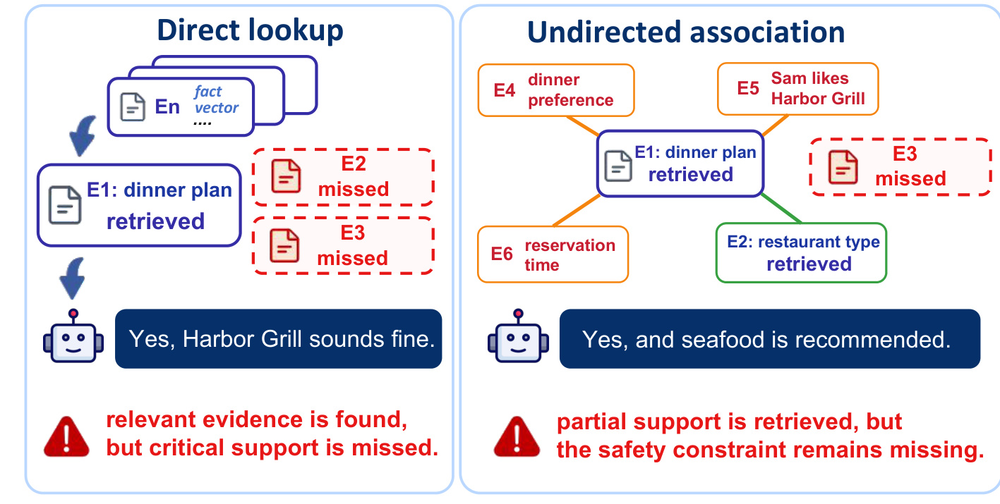
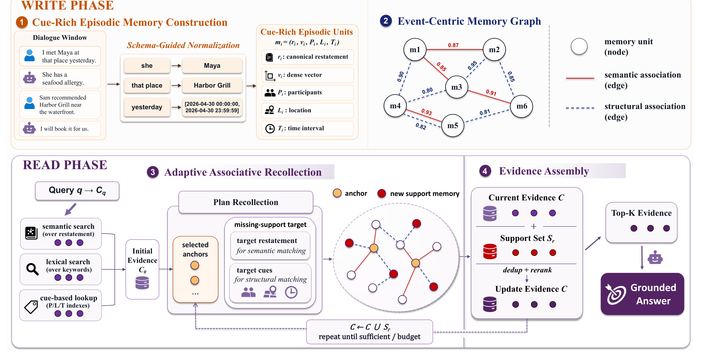
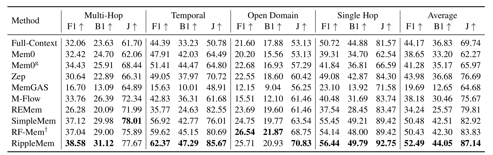
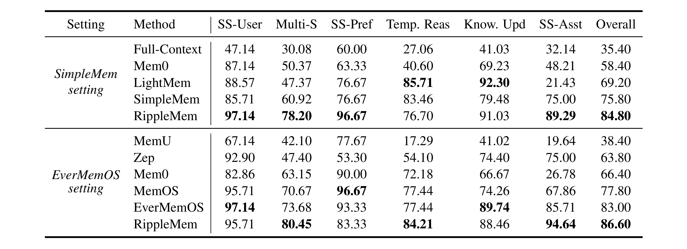
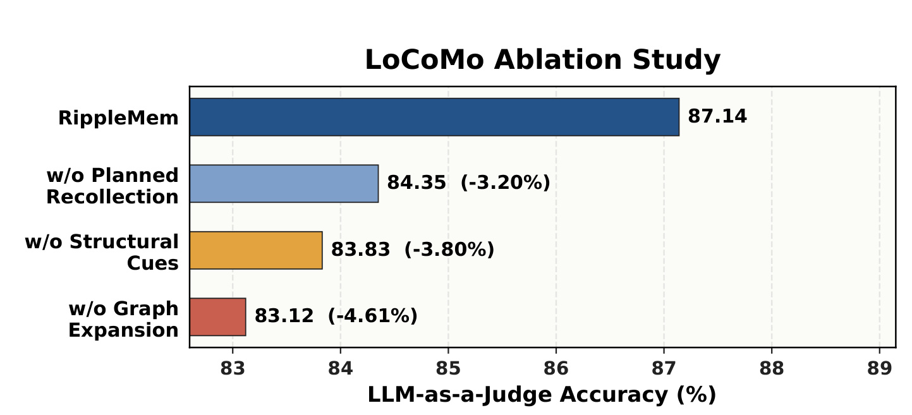
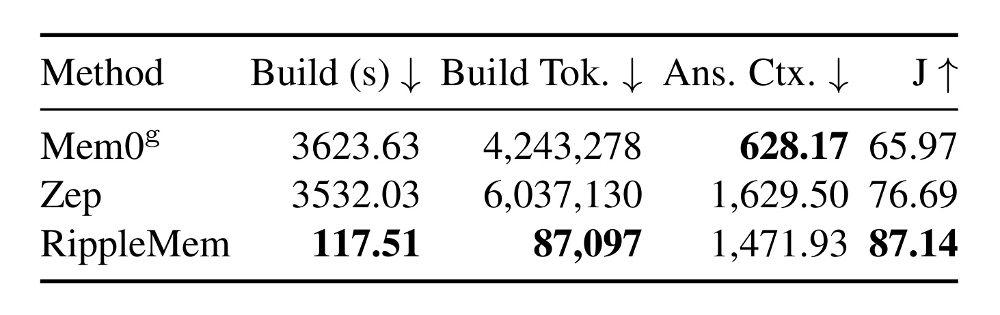
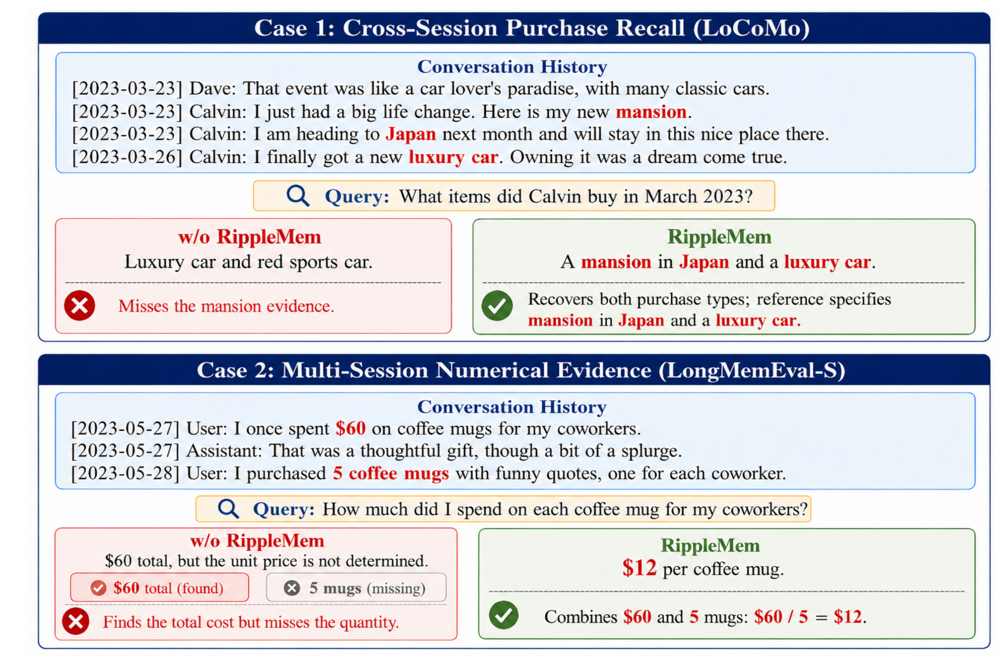

RippleMem：从孤立检索到长期 Agent 记忆的联想式回忆
论文原题为 RippleMem: From Isolated Retrieval to Associative Recollection for Long-Term Agent Memory，作者为 Jingbo Ji、Lingyi Li、Xilong Cheng、Yuhao Zhou、Wenji Zhang、Yuting Tan、Yunxiao Qin，一作主机构是中国传媒大学，合作机构包括智联盈合科技有限公司与媒体融合与传播国家重点实验室。论文于 2026 年 8 月 13 日以 arXiv v1 公开，共 22 页；唯一论文入口是 arXiv:2608.13334。本轮未核验到独立公开代码仓库，附录给出了推理算法、实现超参数与核心提示词模板，足以复核机制，但距离开箱复现仍有工程缺口。
长期 Agent 记忆真正的瓶颈并非把历史保存下来，而是在答案所需证据分散于多次、相隔很远的交互时，仍能把相关片段共同回忆成可作答的证据集合。直接检索容易停在一个看似相关却不完整的记录上，无目标的图扩展也可能只找到邻近信息而继续遗漏关键约束。
1. 背景和问题
长时对话中的“记住”至少包含写入与访问两个不同问题。写入解决哪些历史值得保存、以什么粒度保存；访问解决面对当前问题时，如何从许多已经保存的事件中找到足够证据。过去的外部记忆系统往往把第二个问题简化为查询与单条记忆的相似度检索：把当前问题编码成向量，返回最相似的若干记录，再交给语言模型回答。这在单跳事实上有效，但它隐含了一个很强的假设——答案所需信息能由当前查询直接命中，而且被命中的每条记录各自足以支持答案。RippleMem 关注的正是这个假设破裂后的情形。
设想用户曾在 4 月 23 日提到 Sam 推荐 Harbor Grill，同日另一条信息说这是一家海鲜餐厅，5 月 1 日又提到 Maya 对海鲜过敏。当前问题是“是否应该接受 Sam 为 Maya 做的晚餐推荐”。查询与“Sam 推荐 Harbor Grill”语义最接近，所以直接检索很容易只拿到用餐计划；但真正决定答案的是跨事件组合：餐厅类型与 Maya 的食物禁忌。即使检索器还找到“海鲜餐厅”，若没有把“过敏”当作缺失的安全约束继续寻找，回答仍可能是错误的。相关性是局部性质，可作答性却是证据集合的整体性质。 这一区别把长期记忆访问从 top-k 排序问题改写为“证据补全”问题。

Figure 1 把两种常见失败并排展示。左侧 direct lookup 命中 E1 用餐计划，却漏掉 E2 餐厅类型和 E3 食物限制，于是得到“Harbor Grill 听起来不错”的过早结论。右侧 undirected association 比直接检索多找到了 E2，但它围绕 E1 遍历出晚餐偏好、预订时间、Sam 喜欢餐厅等邻近节点，仍没有明确追问“当前答案还缺什么”，所以 E3 继续缺失。图中最重要的不是检索数量多少，而是扩展方向是否由未满足的证据角色约束：如果系统只沿图边寻找“相关”，更大的邻域未必形成更完整的支持集，反而可能增加噪声。RippleMem 因此不把首跳召回结果当终点，而把它同时视作回答上下文与下一步回忆的线索。
论文将现有路线分成三类。第一类是 full-context，把尽可能多的历史直接塞进长上下文；它省去显式索引，却承受上下文长度、位置偏差与噪声干扰，历史越长不等于证据越容易被模型使用。第二类是 flat retrieval，把交互压缩成独立记忆并按语义、词法或查询规划召回；它更省上下文，但记录彼此孤立时，多跳证据难以一起出现。第三类是 graph memory，用实体、时间或语义关系把记录连起来；它提供结构，却可能需要昂贵的 LLM 建边，而且如果扩展没有“缺失证据目标”，仍会在局部邻域漫游。RippleMem 的定位不是再造一个更大的记忆库，而是把图结构变成一种由已召回事件触发、由缺失支持目标定向的局部回忆机制。
作者借用了认知科学中的事件分段、编码特异性和联想补全作为设计直觉，但谨慎声明这并非对人类记忆机制的神经层面模拟。工程上可验证的主张有三个：其一，保留人物、地点、时间等 cue 的事件单元，比只存摘要更适合跨表述关联；其二，语义边与结构边的稀疏图能让一条已召回事件唤起另一条必要证据；其三，控制器先判断当前证据是否充分，再选择 anchor 与 missing-support target，会优于无条件扩展。由此形成本文的研究问题：当首跳结果相关却不完整时，系统能否在固定证据预算内继续恢复缺失支持，同时避免全局图遍历和昂贵 LLM 建边？
还需要区分“记忆缺失”和“访问失败”。若关键信息从未被抽取或已经在压缩中丢失，任何回忆算法都无能为力；RippleMem 讨论的是证据已经以事件单元存在，却没有被同一问题共同取出的情形。这个限定让方法评价更清晰：写入质量决定证据是否存在，首跳召回决定初始线索，联想回忆决定能否从这些线索抵达补充证据，最终 assembly 决定补出的证据是否进入有限上下文。四个环节任一失败都可能产生同样的错误答案，因此实验必须在固定 memory units 下比较访问策略，论文对 RF-Mem 使用相同抽取结果和证据预算，正是为了减少“写得更好”与“找得更好”之间的混淆。
这一问题也与推荐系统直接相连。长期用户画像常把偏好、禁忌、场景、关系人和最近状态分别记录；召回命中“喜欢海鲜”并不代表在“给过敏家人订餐”的场景仍可推荐。RippleMem 提醒我们，个性化决策需要的不是若干高相似历史，而是能覆盖当前决策约束的支持集合。不过论文评测仍是文本问答，尚未证明这种机制能改善候选召回率、排序指标或在线留存；把它迁移到推荐链路，应把“answerable evidence”重新定义为满足曝光决策所需的兴趣、时效、场景和安全约束，而不能直接把 QA 提升当作推荐收益。
2. 方法
RippleMem 采用 write-read 设计。写入阶段先把连续对话变成可独立理解、带人物/地点/时间 cue 的事件记忆，再用便宜的确定性打分建立两类稀疏边；读出阶段先做三路混合召回，若当前证据不足，控制器选出若干 anchors，并显式生成缺失支持目标，只在 anchor 的有界邻域中找补充记忆。最后系统按 memory id 去重、合并来源信息、确定性排序，并将固定数量的证据交给答案模型。核心变化是把“被召回的记忆”从一次性结果改成下一轮访问的 cue：扩展从哪里开始由 anchor 决定，要找什么由 missing-support target 决定。

Figure 2 上半部是 write phase。原始对话窗口经过 schema-guided normalization，把代词“she”、模糊地点“that place”、相对时间“yesterday”分别落到 Maya、Harbor Grill 和绝对时间区间；输出不仅有规范事件重述与稠密向量，还显式保存 participants、location、time interval。随后 memory unit 成为图节点，红色实线表示语义关联，蓝色虚线表示结构 cue 关联。下半部是 read phase：查询先走 semantic、lexical、cue-based 三路得到初始证据；控制器从中选 anchors，同时生成用于语义匹配的 target restatement 与用于结构匹配的 target cues；局部扩展得到红色新支持，证据集合更新后再判断充分性或预算。最右侧 evidence assembly 做去重与重排，截取 Top-K 才生成 grounded answer。图中循环箭头说明扩展是受预算控制的证据状态更新，而不是把整个邻域一次性灌入上下文。
2.1 从对话窗口到 cue-rich episodic memory
输入对话被切成带局部重叠的连续 turn-level windows。schema-guided LLM extractor 对每个窗口返回 JSON 事件列表；若窗口没有耐久事件、偏好、承诺、观察或计划，则允许返回空列表。输出先做 schema 校验再写入记忆库，避免解析失败直接污染持久状态。每个事件采用固定结构：
符号解释：$m_i$ 是第 $i$ 条事件记忆；$r_i$ 是无需回看原对话也能理解的 canonical restatement；$v_i$ 是 $r_i$ 的稠密表示；$P_i$、$L_i$、$T_i$ 分别是已落地的人物集合、地点集合和时间点或时间区间。抽取器会把说话者相关代词解析为明确人名，只在上下文支持时才把相对时间锚定到绝对区间；无法落地的字段宁可为空，也不猜测。这一保守策略很关键，因为结构 cue 后续会参与建边，写入时臆造的人物或时间会产生稳定而难以察觉的错误路径。
这一步没有训练一个新的端到端记忆模型，而是用 GPT-4.1-mini 执行结构化抽取，用 Qwen3-Embedding 产生 $v_i$。因此“训练时如何优化”在本文里实质上变成了提示词、schema、窗口大小与解码温度的工程设定：所有生成温度为零，LoCoMo 用 40 turns 窗口和 2 turns 重叠，LongMemEval-S 用 10 turns、无重叠。其优点是模块可替换，缺点是抽取质量与供应商模型绑定。事件重述还承担了一次压缩：它必须独立完整，却可能舍弃语气、条件和不确定性；如果这些细节决定后续回答，检索再聪明也无法找回写入时已经丢掉的信息。
2.2 稀疏 event-centric memory graph
所有记忆构成节点集 $M$，图写成 $G=(M,E)$，其中 $E=E_{\mathrm{sem}}\cup E_{\mathrm{str}}$。语义通道直接比较事件重述的稠密向量：
符号解释：$s_{\mathrm{sem}}(i,j)$ 是记忆 $i$ 与 $j$ 的语义关联分，$v_i$、$v_j$ 是两条 canonical restatement 的向量，$\cos$ 为余弦相似度。该边能连接措辞与主题相近的事件，例如“推荐一本书”与“讨论最喜欢的系列”，但它也可能把只是共享主题、并不互相支持的记录连在一起。
结构通道先分别计算人物、地点与时间 cue 的相似度。人物和地点使用规范化集合的 Jaccard overlap；时间 cue 在区间相交时取 1，否则按间隔衰减：
符号解释：$u^T_{ij}$ 是两条记忆的时间兼容度；$T_i,T_j$ 为时间区间；$\Delta(T_i,T_j)$ 是不相交区间之间的距离；$\tau$ 是固定衰减尺度，实验设为 7 天。相交事件被视作同一时间上下文，间隔越大关联越弱。然后只在两条记忆都具备可比较 cue 时做加权平均：
符号解释：$x$ 遍历人物、地点、时间三类 cue；$u^x_{ij}$ 是对应相似度；$I_x$ 指示该 cue 是否同时存在且可比较；$\beta_x$ 为固定权重，论文使用人物 0.50、地点 0.20、时间 0.30。分母按可用 cue 重新归一化，避免缺失字段被当成不相似；若一个 cue 都不可比较，则不产生结构分。这种设计让不同措辞但共享人物或时间的事件仍可连接，也暴露了实体归一化错误对图结构的放大效应。
图不是全对全建边。新增节点只从 semantic nearest-neighbor index 与人物/地点/时间索引各取有界候选，再分别计算 $s_{\mathrm{sem}}$ 和 $s_{\mathrm{str}}$。每节点语义与结构候选池均为 20，最多各保留 6 条边，阈值分别为 0.85 与 0.60；一对节点可以同时拥有两类边。相比让 GPT-4.1-mini 判断每条候选边，这种 typed scoring 不需要逐边调用 LLM，构建成本大幅下降。这里没有学习边权，所有阈值和权重在评测前固定；优势是可控与便宜，风险是跨领域后相似度分布变化时，固定阈值可能造成图断裂或过密。
2.3 受控的 adaptive associative recollection
读出先从查询 $q$ 抽取语义、词法与 grounded episodic cues $c_q$，再执行三种互补召回：
符号解释：$C_{\mathrm{sem}}$ 是针对事件重述的向量召回，$C_{\mathrm{lex}}$ 是关键词匹配，$C_{\mathrm{cue}}$ 是人物/地点/时间索引查询；$C_0$ 为首跳证据并集。LoCoMo 三路 top-k 分别为 10、5、5，LongMemEval-S 为 15、8、8。多路召回缓解单一表示失败，但 $C_0$ 仍只说明“当前 query 能直接找到什么”，不保证集合已经覆盖答案。
控制器 $\Pi_{\mathrm{rec}}$ 读取原查询、查询 cue 与当前证据状态：
符号解释：$d_r$ 决定继续或停止；$A_r\subseteq C$ 是本轮 anchor 集；$g_r$ 是 missing-support target，包含目标重述与可选结构 cue；$s_r$ 是停止理由。控制器不是泛泛地说“再检索一次”，而要识别当前答案缺少的证据角色。例如已召回餐厅推荐与餐厅类型后，$g_r$ 应指向“与 Maya 有关的食物限制”，$A_r$ 则选择能定位这次用餐事件的记忆。实验中最多 3 个 anchors，额外回忆轮数固定为 $R=1$，因此论文所称 adaptive 主要是是否触发、从何处扩展与找什么，并不是无限多轮自主搜索。
候选只来自 anchors 的有界图邻域：
符号解释：$U_r$ 是本轮尚未进入证据状态的候选；$d_G(m,A_r)$ 表示节点 $m$ 到任一 anchor 的图距离；$h$ 为 hop limit，两个基准都设为 2。系统分别沿语义边与结构边扩展，各取 top-5，再用 $g_r$ 的目标重述做语义匹配、用 target cues 做结构匹配，最后按 memory identity 合并为 $S_r$。分数相近时优先较短路径与较强边。若 $S_r$ 为空、控制器判断充分或预算耗尽，就停止；否则更新 $C\leftarrow C\cup S_r$。这里的关键边界是控制器本身仍由 LLM 驱动：它若误判“已经充分”会早停，若虚构缺失目标则会把局部扩展导向错误区域。
2.4 Evidence assembly 与最终上下文预算
多路召回与两类图路径可能重复抵达同一 memory unit。RippleMem 先按 memory id 合并，保留一次文本，同时汇总它来自哪种召回源、位于哪条扩展路径、是否充当 anchor。随后用固定 source-aware score 排序：
符号解释：$a(q,m)$ 是查询与记忆重述的归一化语义对齐；$\pi(m)$ 汇总 semantic、lexical、cue lookup 与 anchor-local expansion 的排名、源分数和路径支持；$I_{\mathrm{anc}}(m)$ 表示该记忆是否曾作为 anchor；$\lambda_q,\lambda_p,\lambda_a$ 分别为 1.25、1.0、0.05。各来源权重依次为 1.0、0.75、0.9、0.85，rank support 为 $1/(5+\mathrm{rank})$。最终保留 $\rho$ 最高的 $K=30$ 条形成 $E_K$，答案模型只接收查询和该证据上下文。
这一 assembly 步骤把“扩展找到过”与“最终送入模型”分开：局部回忆可能产生候选，但固定预算会再次淘汰证据。anchor 只有很小的 0.05 加成，主要排序信号仍是查询对齐与来源证据。好处是避免图扩展无限膨胀上下文，且同一节点不会因多路命中重复占预算；不足是确定性线性加权没有直接优化最终答案的集合覆盖度，两个单独得分一般的互补证据可能同时被排除。论文没有训练阶段，所有模块靠预训练 LLM、embedding、固定阈值和手设权重组成；这使方法更像可审计的 memory orchestration，而不是一个端到端学习器。
3. 实验结果
3.1 数据集、对照与口径
主文评测 LoCoMo 与 LongMemEval-S。LoCoMo 使用 10 段超长对话中 Categories 1-4 的 1,540 个问题，覆盖 single-hop、multi-hop、temporal 与 open-domain；F1、BLEU-1 衡量表面词重合，LLM-as-a-Judge 用 GPT-4.1-mini 在只看到问题、参考答案与生成答案的条件下给二元正确标签。附录另评估 Category-5 的 446 个 adversarial no-support 问题。LongMemEval-S 有 500 个问题，覆盖单会话用户事实、多会话推理、偏好、时序、知识更新与助手信息，主指标是 Judge accuracy。
LongMemEval-S 的表不能把所有行放在同一口径下横比。作者给出 SimpleMem-aligned 与 EverMemOS-aligned 两组：前者用 GPT-4.1-mini judge 与 Qwen3-Embedding-0.6B，后者用 GPT-4o-mini judge 与 Qwen3-Embedding-4B；baseline 分数来自相应先前工作，RippleMem 在各组内使用匹配的 judge 与 encoder。LoCoMo 中 GPT-4.1-mini 兼任抽取、查询分析、回忆规划、回答与 judge，所有温度为零。RF-Mem 复用 RippleMem 抽取出的 memory units，并匹配每题 evidence budget，以尽量隔离 memory-access strategy；这是一项有价值的公平控制，但也意味着它不是 RF-Mem 完整原生流水线的比较。
3.2 LoCoMo 与 LongMemEval-S 主结果

Table 1 显示 RippleMem 的总体 F1、BLEU-1、Judge 分别为 52.49、44.05、87.14。作者以每个指标的最强 baseline 为分母计算相对提升：F1 与 BLEU-1 相对 SimpleMem 的 50.48、42.51 提升 3.98% 和 3.62%，Judge 相对 RF-Mem 的 83.83 提升 3.95%。增益在 temporal 最清楚：对 SimpleMem，F1 从 56.92 到 62.37，Judge 从 76.01 到 85.67；这与“跨时间事件需要组合”相符。Open Domain 上 RippleMem 的 Judge 70.83 最好，但 F1/BLEU-1 为 25.71/20.93，低于 RF-Mem 的 26.54/21.87，说明语义正确性与词面重合并非总同步。Single Hop 也从 RF-Mem 的 89.42 Judge 提至 92.75，提示额外结构未必只服务多跳，不过这也可能来自不同证据排序而非联想扩展本身。
表中的 best overall 支持“整体有效”，却不能证明每个问题都需要 graph recollection。Full-Context 的 Judge 69.74 远低于 RippleMem，说明把整段历史交给模型不足以稳定利用证据；SimpleMem 已达 82.92，表明高质量压缩与 query-aware retrieval 是强 baseline；RF-Mem 在预算匹配下达到 83.83，则把比较进一步收窄到 access strategy。RippleMem 的优势为 3.31 Judge points，而不是数量级差异。考虑 judge 与回答模型同属 GPT-4.1-mini，语义评测可能偏好相近表达或推理方式，因此 F1/BLEU-1 的同步提升与后续消融比单一 Judge 更重要。

Table 2 中，SimpleMem-aligned 组的 RippleMem overall 为 84.80，高于 SimpleMem 75.80；按相对比例约提升 11.87%，这是摘要“最高提升 11.87%”的来源。最大结构性变化出现在 Multi-S：60.92 提至 78.20；SS-User、SS-Pref、SS-Asst 分别为 97.14、96.67、89.29，也明显较高。但 Temp. Reas 的 76.70 低于 LightMem 85.71 和 SimpleMem 83.46，Know. Upd 的 91.03 也低于 LightMem 92.30，说明关联扩展不是所有类别都占优。
EverMemOS-aligned 组中，RippleMem overall 为 86.60，高于 EverMemOS 的 83.00；Multi-S 从 73.68 到 80.45，Temp. Reas 从 77.44 到 84.21，SS-Asst 从 85.71 到 94.64。相反，SS-User 的 95.71 低于 EverMemOS 97.14，SS-Pref 的 83.33 远低于 MemOS 96.67，Know. Upd 的 88.46 略低于 EverMemOS 89.74。这个分类差异与论文主张是一致但有限的：RippleMem 对需要拼接多段证据的问题更有优势，对单条偏好或更新状态的选择未必最好；总体均值不能掩盖这些失败区域。
附录还给出 EverMemBench-Dynamic：5 个项目历史、51,023 turns、2,400 个问题，涉及多方、多群组、跨群组交互和九个子任务。RippleMem overall 54.75%，相对 MemOS 的 42.73 提升 28.13%，相对预算匹配 RF-Mem 的 52.42 提升 4.44%，并在九项中的七项最好。它扩展了主文两套双人对话基准的外推范围，但仍是离线文本 QA，而且使用 BGE-M3、20-turn 窗口等另一套实现配置；因此可以视为稳健性补充，不能等同于在线持续记忆的验证。
3.3 消融与边机制替换

Figure 3 固定 backbone、memory extraction、answer generation 与扩展预算，只移除相应访问组件。完整模型 Judge 为 87.14；去掉 planned recollection 后为 84.35，相对降 3.20%，说明同样的扩展预算若没有 controller 选择 anchor 与目标，找到的补充证据更差。去掉 structural cues 后为 83.83，相对降 3.80%，说明仅靠语义边会错过措辞不同但共享人物、地点或时间的事件。去掉 graph expansion 后降至 83.12，相对降 4.61%，是最大损失，直接证明首跳混合召回经常未覆盖所有支持。三项都下降，支持“图、结构 cue、规划”是互补部件，而非其中一个装饰模块。
完整 Table 8 也暴露细节：去掉 structural cues 后 Open Domain 的 F1/BLEU-1 反而由 25.71/20.93 升至 29.98/24.79，但 Judge 从 70.83 降到 62.50。作者解释为语义扩展可能更偏向词面重合，结构关系则帮助组织能支持语义正确答案的 grounded cues。这项现象提醒我们，Judge 指标承担了关键论证角色；若 judge 对结构化但措辞不同的回答更宽容，结果可能放大方法优势。复现时应加入多 judge、一致性抽查与人工标注子集。
另一项受控实验把 typed association scoring 换成 GPT-4.1-mini 对候选边做四类判断。LLM-EDGE 在 Multi-Hop Judge 上为 79.79，高于 RippleMem 的 77.67，表明灵活边判断确实能找到部分有用关系；但 overall Judge 为 86.62，低于 87.14，且时序、单跳等类别也不占优。更重要的是，LLM-EDGE 每段对话构建消耗 2,408,796 tokens、521.2 calls，而 typed scoring 只需 87,097 tokens、15.8 calls，约为 27.7 倍 token 与 33.0 倍调用差。由此可见 RippleMem 的贡献不是证明 LLM 建边无效，而是在总体准确率几乎不牺牲的情况下用可解释 cue 约束换取大幅构建成本下降。
3.4 成本、无支持问题与案例

Table 3 把 offline build 与 answer-time context 分开。Mem0g、Zep、RippleMem 的平均构建时间分别是 3,623.63、3,532.03、117.51 秒，因此“约 30 倍”是相对这两个图记忆 baseline 的构建时间：3,532.03/117.51 约 30.06，3,623.63/117.51 约 30.84。构建 tokens 分别为 4,243,278、6,037,130、87,097，对应约 48.7 倍和 69.3 倍。这个结果与稀疏候选加固定打分的设计一致，但它不代表端到端回答快 30 倍：RippleMem 每题 answer context 为 1,471.93 tokens，高于 Mem0g 的 628.17、低于 Zep 的 1,629.50，而且 controller 还平均消耗 2,880.6 prompt+completion tokens，每题至多调用一次。论文报告的是 phase-level trade-off，没有给完整在线 p50/p95 latency 或货币成本。
与 MemPalace 的对齐比较进一步说明上下文效率：Top-5 Judge 81.75、平均 3,802.01 context tokens，Top-10 Judge 86.69、7,502.59 tokens；RippleMem 为 87.14、1,471.93 tokens，相对 Top-10 少约 80.4% 上下文并略高 0.45 points。不过这是作者重跑的对齐设置，保留 MemPalace hybrid-v5 且没有 LLM reranking；它说明在该配置下证据更紧凑，不宜推广为所有 MemPalace 部署的普遍结论。
无支持问题检验了“多回忆一步是否更容易幻觉”。Category-5 有 446 题，RippleMem Judge 86.32%，去掉第二轮为 84.75%，说明一次有界验证没有整体伤害；但 RF-Mem 达到 88.57%，RippleMem 并非最优。控制器在可回答 Categories 1-4 的第二轮触发率为 60.8%，在无支持题上高达 93.0%；触发样本 Judge 分别为 81.7 与 87.5。作者的机制是：即使 controller 继续，只有候选匹配 missing-support target 才更新 $C$，否则空支持集直接停止。高触发率可以理解为谨慎验证，也意味着大多数无支持请求会支付额外 LLM 成本，且是否真正降低 unsupported answer 仍依赖 controller 与 judge。

Figure 4 的第一个 LoCoMo 案例问 Calvin 在 2023 年 3 月买了什么。历史分别提到 mansion、去 Japan、luxury car；无 RippleMem 的对照答成“luxury car and red sports car”，漏掉 mansion 且引入不受参考支持的 sports car。RippleMem 将分散片段组合为“a mansion in Japan and a luxury car”。第二个 LongMemEval-S 案例中，一条记录给出送同事咖啡杯总支出 60 美元，另一条给出买了 5 个杯子；首跳只拿到总价而无法算单价，RippleMem 找回数量后得到 60/5=12 美元。两个例子分别对应集合补全与数值证据组合，直观支持“找齐证据”而不只是扩大相似上下文。
案例仍不能单独证明机制，因为图中对照被概括为 w/o RippleMem，具体是哪种完整 baseline 需要结合附录设置理解。Table 13 的四本书 worked trace 更接近可复现解释：首跳找到《The Name of the Wind》和一条后续推荐交流，controller 选该交流为 anchor，把目标设为“John 还向 James 推荐过哪些书”，再沿语义与共享人物/时间结构边找回《The Stormlight Archive》《Kingkiller Chronicle》《The Expanse》。这一轨迹说明 typed edge 的作用是划定局部可达区域，target 才负责在区域内选择真正缺失的推荐项。定量表、消融与轨迹三者合在一起，证据链比只看案例更可信。
4. 总结
4.1 我的判断
RippleMem 最值得保留的思想是：长期记忆访问的优化目标不应只是单条相关性，而应是在预算内恢复覆盖答案所需角色的证据集合。它把这一思想落成四个可审计组件：cue-rich event schema 保存可关联线索；typed sparse graph 降低 LLM 建边成本；controller 显式选择 anchor 与 missing-support target；assembly 用固定预算收束上下文。LoCoMo、LongMemEval-S 与 EverMemBench 的总体结果、三项消融和边构建成本共同支持该设计，尤其 multi-session 与 temporal 类别的改善和 graph-expansion 消融较有说服力。
但标题中的 associative recollection 不应被理解成无边界的自主记忆。报告实验固定额外轮数 $R=1$、hop $h=2$、最终 30 条记忆；所谓 adaptive 主要是判停、选 anchor 与构造 target。这个限制反而有工程价值：它让成本与错误传播可控，也使线上系统能把回忆当成首跳失败后的受限补救，而不是默认执行的长链 Agent。对于推荐系统，可将 anchor 视为首轮候选对应的关键历史事件，将 missing-support target 视为尚未覆盖的场景、时效、关系人、安全或反偏好约束，再在用户事件图局部补证；但排序目标必须重新训练或校准，不能直接复用 QA judge。
4.2 工程启发与复现建议
第一，写入 schema 比检索器更早决定系统上限。复现应先抽样核对代词消解、时间锚定、地点归一化与“不确定就留空”，并记录事件压缩造成的信息损失。第二，typed graph 可作为高成本 LLM graph 的廉价前置层：用 participant/location/time 等可靠字段建稳定边，只对低置信候选调用模型判断。第三，把首跳结果升级成 cue 适合用于检索后的二阶段补证；在线实现可只在证据覆盖检查失败时触发，缓存 query cue 与局部邻域，并对 controller 设调用、token、hop 和节点预算。第四，评估要拆成 evidence recall、集合覆盖、answer correctness、额外延迟与写入成本，避免把最终 Judge 的提升全部归因于图结构。
一个可执行的最小复现实验是：先在 LoCoMo 固定作者给出的 memory units 与 $K=30$，分别实现三路首跳、无规划 2-hop 扩展、带 anchor/target 的一轮扩展；同时保存每题 $C_0$、$A_r$、$g_r$、$S_r$ 与最终 $E_K$。除了复算 F1/BLEU-1/Judge，还应统计首跳证据覆盖、第二轮新增有效证据率、空扩展率、错误 target 率和每题 controller tokens。只有这样才能分清提升来自更好的事件抽取、更多证据、正确的关联路径，还是 judge 对回答风格的偏好。
4.3 局限与后续跟进
局限至少有五点。其一，主指标高度依赖 LLM-as-a-Judge，且 LoCoMo 的答案模型与 judge 都是 GPT-4.1-mini；尽管 judge 只看问答与参考，模型家族偏好仍可能影响语义正确率。其二，论文只在文本对话 QA 中离线验证，未覆盖多模态观察、工具状态、行动后果与真实在线持续写入。其三，memory extraction、query analysis 和 controller 都需 LLM，Table 3 的 30 倍只描述构建阶段，相对于端到端延迟和费用的结论仍不完整。其四，固定 cue 权重、边阈值与 degree budget 可能随领域、语言、实体密度变化而失配，且错误实体归一化会永久改变图路径。其五，长期个人记忆涉及删除、过期、冲突与隐私；论文提到未来需要 memory aging 和 privacy-preserving deletion，却未给出图中级联删除与衍生重述清理机制。
后续应优先跟进四件事。第一，等待公开代码或作者实现，核对 117.51 秒构建时间的硬件、并发、API 延迟与缓存口径，并复算 30 倍比较。第二，在人工标注子集上用多个 judge 和盲审检查 Open Domain 中“词面更高但 Judge 更低”的结构 cue 结论。第三，将 $R$ 从 1 扩展到 2-3，测量证据覆盖、错误扩散与成本曲线，确认机制在更长推理链下是否仍稳定。第四，构造推荐场景实验：历史中分散记录长期兴趣、短期意图、禁忌和关系人约束，比较 flat retrieval 与目标驱动补证对候选覆盖、违规推荐率和排序质量的影响。只有这些验证补齐后，RippleMem 才能从有说服力的长期记忆 QA 方法，进一步成为可部署的个性化记忆组件。